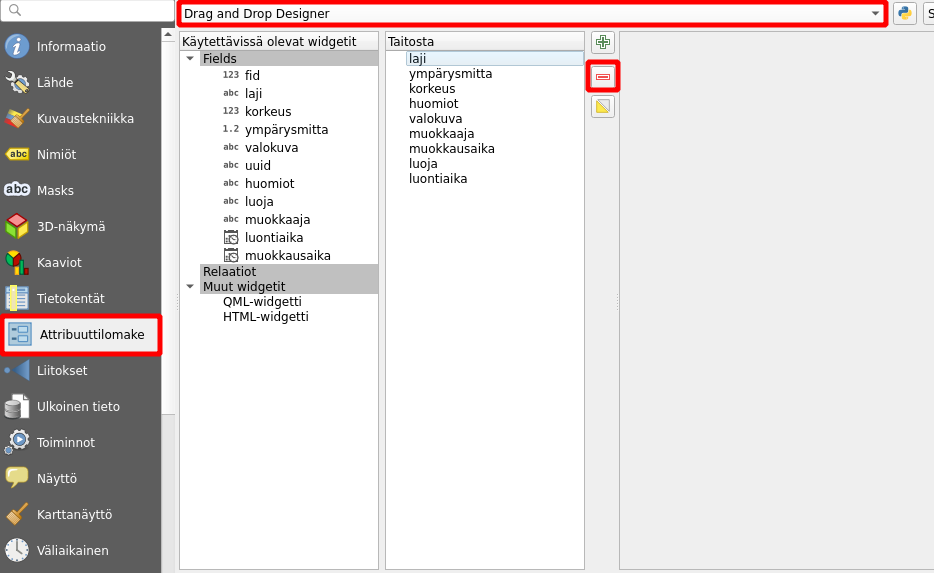
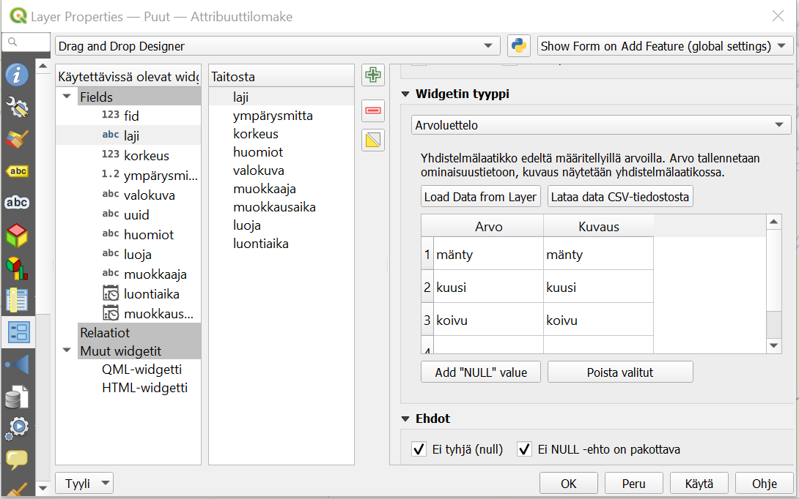
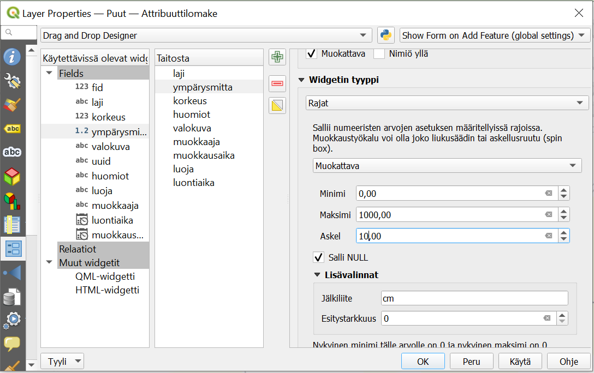
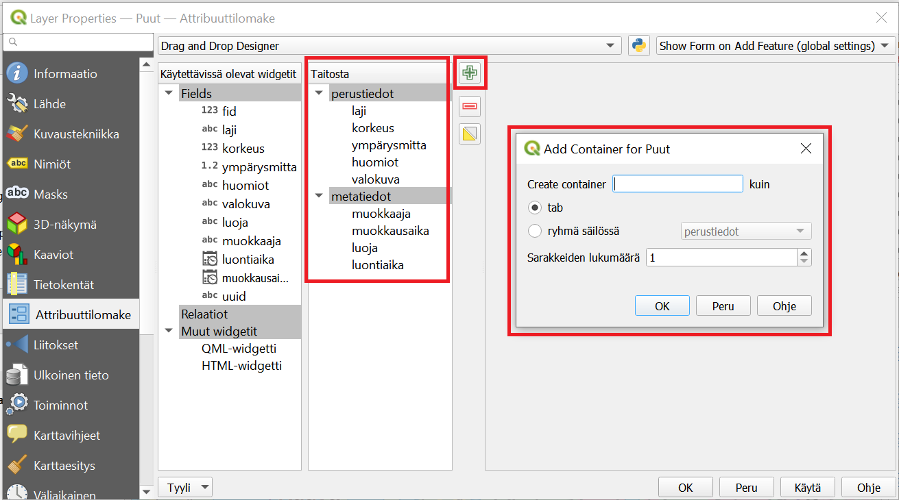
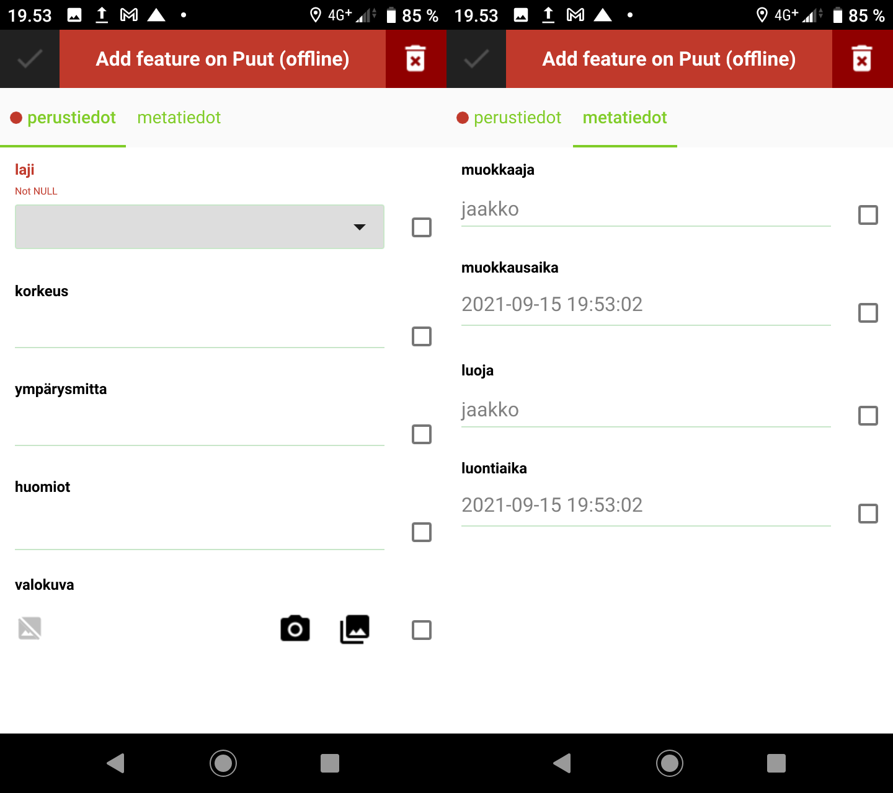

4 Harjoitus 3: Lomakkeet
4.0.1 Harjoituksen sisältö
Tässä harjoituksessa muokataan projektissa olevien tasojen tietojen syötön lomakkeita digitoinnin helpottamiseen ja tehostamiseen.
4.0.2 Harjoituksen tavoite
Koulutettava oppii muokkaamaan tiedon syöttötapoja QGISin widgettejä käyttäen, sekä osaa tunnistaa mobiilitiedonkeruussa ja etenkin QFieldissä tähän liittyvät erityispiirteet. |
4.0.3 Arvioitu kesto
45 min.
4.1 Valmistautuminen
Avaa QGIS tietokoneellasi ja avaa siellä aiemmin luomasi QGIS-projekti (Projekti > Avaa), siirry oikeaan kansioon, valitse projektitiedosto (“QField-kurssiprojekti”) ja paina Avaa.
4.2 Taustatietoja
Tässä harjoituksessa muokataan projektissa olevien tasojen tietojen syötön lomakkeita digitoinnin helpottamiseen ja tehostamiseen. QGISissa on erityyppisille tiedoille ja niiden syöttötavoille valittavissa monenlaisia vimpaimia (widgets). Näitä kaikkia ei kuitenkaan ole vielä tuettuna QFieldissa, joten niitä ei voi siinä siis käyttää. Tuettujen widget-tyyppien ajantasaisen listan näet dokumentaatiosta: https://qfield.org/docs/prepare/attributes-form.html
4.3 Ominaisuustietolomakkeen muokkaus
Avaa QGISissa Puut-tason ominaisuudet klikkaamalla hiiren oikealla napilla Tasot-paneelista tason kohdalta. Valitse Ominaisuudet… ja mene Attribuuttilomake-välilehdelle. Valitse välilehdellä ylhäällä olevasta pudotusvalikosta Drag and Drop Designer -tila (suom. Raahaa ja pudota -muokkain) automaattisen sijaan. Tässä lomakkeeseen sisällytettävät kentät on välilehden keskimmäisessä, Lomakenäkymä-nimisessä (ent. taitosta) sarakkeessa. Tähän voidaan lisätä objekteja vasemmanpuolimmaisesta sarakkeesta keskimmäiseen raahaamalla. Samoin tarpeettomia vimpaimia ja kenttiä voi poistaa lomakkeen taitosta klikkaamalla kyseistä objektia ja poistamalla se punaisesta miinus-nappulasta (kts. kuva). Drag and Drop Designer -näkymässä voidaan myös ryhmitellä lomakkeen kenttiä esimerkiksi eri välilehtiin ja nämä ryhmitykset toimivat myös QFieldin käyttöliittymässä.
Pidetään nyt kuitenkin kaikki kentät samassa välilehdessä. Poistetaan sen sijaan lomakenäkymästä kentät fid sekä uuid, joita ei lomakkeessa haluta manuaalisesti lisätä. Lomakenäkymä -sarakkeessa voi myös muuttaa lomakkeen kenttien järjestystä raahaamalla. Muokkaa nyt kenttien järjestys alla olevan kuvan Taitosta-osion mukaiseksi.
 ## Laji-tietokenttä
Ruvetaan nyt muokkaamaan tietojen syöttötapoja. Klikkaa keskimmäisessä Lomakenäkymä -sarakkeessa laji-kenttää. Valitse oikeaan sarakkeeseen aukeavasta Widgetin tyyppi -pudotusvalikosta Arvoluettelo Tekstin muokkaus -tyypin sijasta. Tällä tavoin puulajitieto lisätään digitoidessa valitsemalla luettelosta jossa on tiettyjä arvoja. Tällöin myös esimerkiksi kirjoitusasu säilyy yhdenmukaisena ja aineiston myöhempi analyysi todennäköisesti myös helpottuu. Lisää nyt taulukkoon kohtaan Arvo puulajien nimiä, ainakin Suomen yleisimmät puulajit: mänty, kuusi ja koivu. Lisää yksi laji per rivi. Halutessasi voit jatkaa listaa seuraavaksi yleisimmillä lajeilla: haapa, harmaaleppä, kataja, lehtikuuset, pihlaja, raita, tammi sekä tervaleppä, jos arvelet niitä tarvitsevasi. Aseta tämän jälkeen vielä Ehdot-osioon alle ruksi valintalaatikkoon Ei tyhjä (null), jolloin ainakin tämä tieto on aina täytettävä.

4.4 Ympärysmitta- ja korkeus -tietokentät
Klikkaa nyt ympärysmitta-kenttää Taitosta-sarakkeessa. Sekä tämän että korkeus-kentän sisältö on numeerista, eli on luontevinta valita widgetin tyypiksi rajat. Tehdäänkin näin, mutta muistetaan samalla että tämä tyyppi ei ole tällä hetkellä tuettuna QFieldissä ja sen lomakenäkymässä nämä tiedot joudutaankin syöttämään tekstisyöttönä. Ei-tuettujen widgettien tapauksessa se siis jättää sen huomiotta ja käyttää oletus-syöttötapaa (QField tunnistaa kyllä tässäkin kentän tyypin ja varmistaa että tähän pystyy lisäämään ainoastaan numeroita avaamalla numeronäppäimistön).

4.5 Huomiot-tietokenttä
Tähän olisi tarkoitus lisätä vapaamuotoisia lisähuomioita, joten tämän voi pitää oletusasetuksilla Tekstin muokkaus -tyyppisenä. Valitaan tähän alle lisäksi Monirivi (Multiline), jolloin pidemmätkin huomiot voi lisätä kätevästi. Koska huomioita ei toisaalta välttämättä ole, jätetään Ei tyhjä -ehto valitsematta.
4.6 Valokuva
Mobiililaitteella otettujen valokuvien lisäys tapahtuu QFieldillä liitteenä, joten valise widgetiksi Liite ja sen asetuksista Suhteelliset polut.
Pidä mielessä, että QField tallentaa tasolle kohteen tietoihin valokuvista (ja muista liitteistä) ainoastaan tiedostopolun, ei itse valokuvaa. Valokuvat tallentuvat mobiililaitteen kansioon. Tarkastellaan tätä lisää myöhemmin, kun synkronoidaan kerättyjä tietoja takaisin QGIS-projektiin. Tällöin valokuvat sisältävä kansio on siirrettävä erikseen tietokoneelle, projektitiedoston suhteen samaan paikkaan kuin mobiililaitteella.
4.7 Luoja- ja muokkaaja -tietokenttien automatisointi
Luoja- ja muokkaaja-kentät ovat teksti-muotoisia kenttiä, jotka sisältävät tiedon muokkauksen tekijästä. Pidä siis widgettinä Tekstin muokkaus. Koska muokkaaja tietyllä laitteella on yleensä yksi ja sama henkilö, tätä ei haluta joka kerta lisätä manuaalisesti, vaan automaatio on suotavaa, ja se voidaan saavuttaa Oletusarvot-kohdan avulla. Olemme aiemmin määritelleet QFieldin asetuksissa käyttäjän oman muuttujan username. Tällaiseen muuttujan arvoon voi QGISissa viitata @-merkillä. Kirjoita siis tähän Oletusarvo-kohtaan Luonti- ja muokkauskentille kummallekin erikseen @username_full_name, jolloin QField osaa lisätä kohteelle käyttäjänimen.
Luonti ja muokkaus eroavat toisistaan siinä, että kohde luodaan vain kerran, kun taas sitä voidaan muokata moneen kertaan. Muokkaaja-tietokentälle pitääkin varmistaa, että tässä on Yleistä-kohdassa valittuna Muokattava ja Oletusarvo-kohdassa Käytä oletusarvoa päivityksessä. Vastaavasti Luoja-tietokentässä nämä kaksi kohtaa eivät saa olla valittuna, jotta tietojen syöttö toimisi kuten haluamme! Sen sijaan kohteella tulee aina olla luoja, joten laitetaan sille vielä Ehdot-kohdassa ehdot Ei tyhjä (null) ja EI NULL -ehto on pakottava.
4.8 Luonti- ja muokkausaika -tietokentät
Myös luonti- ja muokkausaika-kentille pätee sama, mitä edellä sanottiin luonnista ja muokkauksesta, ja ne käsitellään kumpikin melko samalla tavalla. Valitse kummallekin Widgetin tyypiksi Päivä/Aika. Näidenkin tietojen syöttö halutaan automatisoida, ja tämä onnistuu käyttämällä QGISin sisäistä funktiota now(), joka kirjoitetaan Oletusarvo-kohtaan kummallekin kentälle. Muokattava, oletusarvon päivitys ja null-ehdot määritetään täsmälleen kuten edellä Luoja- ja Muokkaaja-kentille ohjeistettiin.
4.9 Kohteen uuid-kenttä
Vaikka uuid-tietokenttä poistettiinkin taitosta tarpeettomana tietona, määritetään nyt miten kyseinen tieto kohteelle syötetään. Tässäkin apuun tuleen QGISin sisäinen funktio nimeltä uuid(), joka luo tarvittavan UUID-koodin. Klikkaa vasemmanpuoleisesta Käytettävissä olevat widgetit -sarakkeesta kohtaa uuid. Pidä widgetin tyyppinä Tekstin muokkaus, mutta mene jälleen Oletusarvo-osioon ja kirjoita oletusarvoksi funktio uuid(). Poista myös Muokattava- sekä Käytä oletusarvoa päivityksessä -valinnat, sillä kun kohde on luotu, UUID:n ei tule enää muuttua.
4.10 Lomakkeen välilehdet
Kun täytettäviä ominaisuustietokenttiä on paljon, niiden jaotteleminen eri välilehdille saattaa helpottaa työskentelyä. Myös QField tukee välilehtien käyttöä. Välilehti-ominaisuus luodaan QGISissa samassa näkymässä jossa juuri määrittelimme tietojen syöttötavat eri kentille.
Vaikka lisättäviä ominaisuustietoja ei nykyisessä projektissamme aivan valtavasti olekaan, saattaa olla kätevää jaotella metatiedot omalle välilehdelleen, sillä nämä liittyvät toisiinsa eikä niitä myöskään täytetä manuaalisesti. Klikkaa vihreää plus-merkkiä lisätäksesi uuden välilehden (kts. kuva). Anna välilehdelle (tab) nimeksi “metatiedot” ja sarakkeiden lukumääräksi 1. Paina OK, jolloin välilehti ilmestyy Taitosta-sarakkeeseen. Raahaa metatieto-kentät välilehden päälle ja irrota, jolloin ne sisältyvät välilehteen alla olevan kuvan mukaisesti. Lisää sitten toinen välilehti ja anna sille nimeksi “perustiedot”. Raahaa loput ominaisuustietokentät tähän välilehteen. Huomaa että pystyt muokkaamaan välilehtien ja niiden sisältämien kenttien järjestystä sopivaksi samaan tapaan raahaamalla.
Tämän jälkeen voit klikata OK, jolloin attribuuttilomakkeen muutokset tulevat voimaan QGIS-projektissa. Muista tallentaa myös projektitiedosto pikanäppäimellä CTRL + T tai päävalikosta Projekti > Tallenna.

4.11 Näyttö ja kohdelistaus
Huomasimme edellisen harjoituksen lopussa, että kohdelistauksesta oli hankala erottaa kohteita toisistaan selkeyttävien kohdenimien puuttuessa. Tilannetta voi helpottaa QGISin Näyttö-valikon avulla. Avaa siis jälleen Puut-tason ominaisuudet, ja avaa tällä kertaa Näyttö-välilehti. Siellä voidaan määrittää Näyttönimi, joka on nimi, joka kohdelistauksessa näkyy. Varsinaisia nimiä puukohteillamme ei nyt ole, mutta voimme yrittää erotella kohteita toisistaan esimerkiksi laji-kentän ja jonkin muun kentän, esimerkiksi luontiajan, arvon avulla. Lausekkeen voi kirjoittaa suoraan kuvassakin näkyvään laatikkoon, tai voi käyttää apuna Lausekkeen muokkaus -ikkunaa painamalla “epsilon”-ikonia laatikon oikealta puolelta. Muista, että kenttien nimet tulevat tavallisten, kaksinkertaisten lainausmerkkien sisälle (“laji”), kun taas muut tekstipätkät yksinkertaisten heittomerkkien sisälle (‘,’). Esimerkkinä karttavihjeelle voisi siis olla: “laji” || ‘,’ || “luontiaika”. Kirjoita tämä tai muu haluamasi lauseke näyttönimeksi, ja paina OK.

4.12 Tarttumisen asetukset
Määritellään tässä kohtaa projektille vielä toinen digitointia käytännössä helpottava asetus, nimittäin tarttuminen (snapping), vaikka tätä tarkastellaankin lähemmin vasta harjoituksessa 5. Mikäli QGISin työkalupalkissa ei näy alla olevan kuvan kaltaista magneetti-ikonia, avaa ylävalikosta: Näytä > Työkalut > Tarttumisen työkalut. Jotta tarttuminen toimisi QFieldissä, on nämä asetukset määriteltävä QGIS-projektille. Voit käyttää kuvasssa näkyviä asetuksia, eli
magneetti-ikoni on aktivoituna,
“kaikki tasot” valittuna,
Taitepiste ja Segmentti valittuna
etäisyysarvo on 15 pikseliä (px).

4.13 Lomakkeet QFieldissä
Voit testata nyt miltä lomake näyttää tehdyillä muutoksilla. Tutki lomaketta ensin QGISissa lisäämällä joitakin kohteita Puut-tasoon. Tämän jälkeen siirrä projekti jälleen QFieldiin QField Sync -lisäosaa käyttäen (ei tarvitse muuttaa synkronointiasetuksia) ja testaa QFieldissa. Voit joko lisätä uusia kohteita QFieldillä tai vain selata olemassa olevien kohteiden attribuuttitietoja. Kummassakin tapauksessa näet aukeavassa lomakkeessa luodut välilehdet (perustiedot ja metatiedot). Pääset liikkumaan välilehdeltä toiselle joko klikkaamalla välilehden otsikkoa tai liu’uttamalla näyttöä sormella sivulle.

Psst! Koulutuksen jälkeen saat henkilökohtaista tukea Gispon tukipalvelusta. Lähetä kysymyksesi tai kommenttisi osoitteeseen tuki@gispo.fi! |